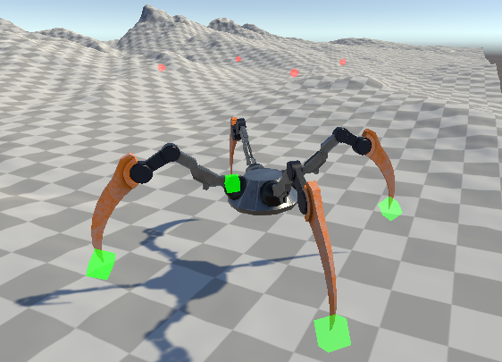

PROJECTS
PROCEDURAL ANIMATION
UNITY - C# - ANIMATION AND RIGGING
Procedural Animation automatically generates animations using an algorithm attached to the rig. This allows for diverse and dynamic animations which will be difficult to produce using traditional keyframe animation. My final year project allowed me to research and develop an impressive locomotion animation without the use of 3D software.
LEGO SAW SCENE
BLENDER - MODELLING - TEXTURING - RIGGING - LEGO

With the help of Blender and MecBricks I was able to create a scene from one of my favourite movies using techniques applied to Lego
AT-AT
MAYA - MODELLING - TEXTURING - RIGGING
AT-AT was one of my first big 3D model projects, I went through all the stages of Modelling, UV Mapping, Texturing, Rigging, Animating and finally exporting it all into Unity, creating a demo game with all the assets.

PARTICLES AND EXPLOSIONS
MAYA - PARTICLES - nCLOTH
While exploring Maya's in-depth particle system to create cool effects like fire and water. I found out that particles combined with ncloths can create very interesting explosions of models.
VIRTUAL REALITY IMPLEMENTATION
VR - C# - UNITY - META QUEST
As Virtual Reality is an emerging technology it made sense to explore applications that use VR. This project allowed me to explore the implementation of a VR device into Unity and how it might differ from a traditional Unity application.